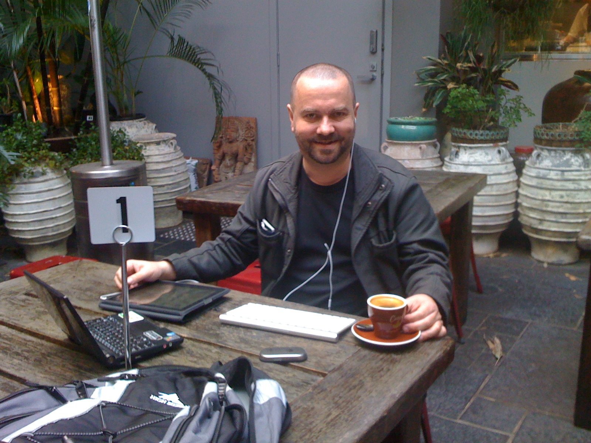

Introduction
The propositions written here are suggestions, not rules. They are not instructions about how one must or should act. They are instructions about how one could act. Please consider them.
Principles
- prefer suggestions to rules
- prefer questions to answers
- prefer listening to saying
- prefer the specific to the general
- prefer harmony to conflict
- prefer learning to teaching
- prefer thinking to believing
- prefer doubting to knowing
- prefer reflection to aggression
- prefer consistency to completeness
- prefer one on one conversations to alternatives
- prefer transparency to opacity
- prefer identity to anonymity
- prefer courage to cowardice
- prefer inclusion to exclusion
- prefer acceptance to rejection
- prefer diversity to conformity
Behaviours
- accept inconsistency in yourself, and in others
- accept that you may have to agree to disagree
- expect to be insulted but avoid insulting others even when provoked
- if someone has insulted you, they are probably angry.
- if someone else is angry, don't provoke them. instead ask them why they are angry.
- if you are angry yourself, don't provoke others. instead, ask yourself why you are angry.
- prefer to leave your own opinion unstated unless you are asked for it
- if you are asked a question, give your own answer, not what you have been told to think
- if you are always right and the other is always wrong, you are probably wrong anyway.
- if politics was a game of football, it would be a game with lots of goals and no full-time.
- if you are angered by a question, ask your self why
- if you find yourself hating someone, ask yourself why.
- treat others as you would expect to be treated by them
Aphorisms
- In any self-respecting manifesto, violent acts are always a fundamental contradiction to the manifesto. Or: a manifesto should not require a weapons detail.
Manifesto
This is a draft and will be refined over time.
If there is one ultimate objective of this project it is to: disintermediate the media from politics. Simply: to reduce the political power of the media itself in political discourse and return that power to people by suggesting ways to apply the ancient technique of dialectic to the analysis of political rhetoric and to do so in a way that maximises the participation of people from all walks of life, irrespective of ideology, literacy and educational qualifications. These ideas will only become real if other people implement them. Find an idea you like, then find a way to contribute to its implementation.
The manifesto is intended to be as ideologically neutral as possible.
Be sceptical of any any claims made by or about this manifesto, especially claims made by others. Test all such claims yourself. Think.
Jon Seymour - 7th September, 2011
Twitter
Relationship of project to twitter.com
This project has no relationship to the twitter.com, the owner of the Twitter platform itself. In what is meant to be a gesture of good faith, if the owners of Twitter trademark would like me to transfer control of domains containing the letters "twitter" to Twitter, I promise to do so. However, in the interests of fairness I would appreciate the opportunity to engage the executive of Twitter in dialog before any legal demand is issued. The objective to ensure that we can achieve a mutually acceptable outcome with a minimum of fuss. This offer does not extend to domain names that do not contain the letters 'twitter' unless otherwise specified.
Twitter account
The primary twitter account used by this project is @tweeterzen. Tweets from this account are intended to be ideologically neutral and as consistent with the manifesto as possible.
The founder also uses his own account @jonseymour for personal purpose or for debates in which he wishes to adopt his own, partisan, position.
License
This material is released under Creative Commons Attribution CC BY, v3.0 unless otherwise specified by LICENSE. The intent is to ensure propagation of the ideas is as wide as possible. Note that, for legal reasons, software artifacts carry different licenses. Note also that any artifact deemed to be part of the manuscript for "Zen and the art of political discourse in the Internet age" will be covered under the terms of a more restrictive variant of the Creative Commons license which is yet to selected.
Founder
Jon Seymour, Sydney, Australia, 5th September, 2011.
About
This page is the work of @jonseymour. He strives for a neutral tone where he can while tweeting as @jonseymour, but particularly when tweeting as @tweeterzen.
Disclaimer

I am Jon Seymour a 40+ Australian who is an (hopefully not always) partisan supporter (but not member) of the Greens party.
I disclaim all ownership of any implementation of these ideas unless otherwise specified.
While at school in the early 1980s, I guess I reflected my parents opinions and supported the Liberal Party. I started towards Labor while still at school at a time when the nation had decided to give Bob Hawke a run. While at university, I started leaning towards the Australian Democrats partly because I recognised the value of a moderating force in the Senate. I liked Paul Keating. I was mortified when John Howard came to power in 1996 but didn't migrate to card carrying Howard Hater until the small detailts of Children Overboard, TAMPA, Iraq War, AWB. As the Australian Democrats dissolved, I started to move my allegiance towards the Greens. In my view, they are the least cynical of all the political parties operating in the Australian system. They tell you exactly what they want, usually don't get it but say a polite thank you when they do. Can't argue with that.